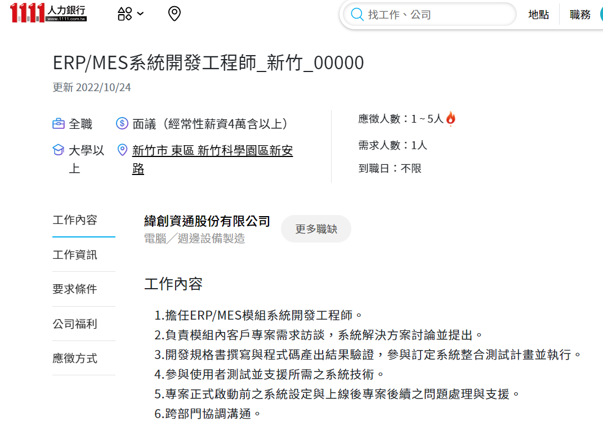
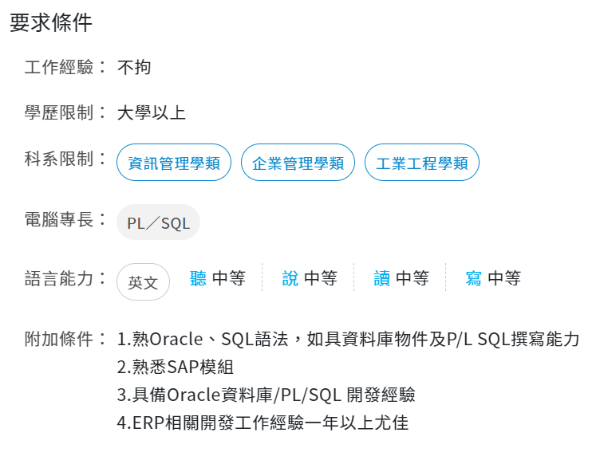

汪奕幟的個人網頁


↑我是連結↑
為何適合這份工作?
我就讀資訊管理學系，學習了很多資料庫相關的技能。而且在開發過程中能夠細心處理每個細節，同時也有良好的溝通能力，能夠充分了解客戶的需求並完成專案。
求學經歷
在大一學習程式的過程中，我建立了良好的邏輯能力，大二接觸到了ERP及資訊管理相關課程，對這方面有了更多的興趣。
未來規劃
在大三的時候，修習相關課程，讓我的專業能力更進一階;大四的時候透過實習取得更多實戰經驗，並同時加強我的英文能力，目標達到多益750分。